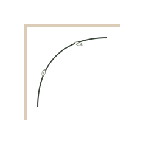

Londrina contact
WhatsApp, email and Instagram are the public contact routes.
Discuss in consultation
Concept 49 · Wisdom · Accessibility
Accessibility focuses on keyboard access, readable text, clear states and reduced motion.


farm-clean field notes
Logo, FS monogram, portrait treatment, botanical detail and custom icons are built as a local Sofiati asset pack for this page.
clean farm skincare
Readable structure, keyboard access and reduced-motion support.
WhatsApp, email and Instagram are the public contact routes.
Discuss in consultationShort notes make laser, skin and aftercare easier to understand.
Consultation brings clarity before any treatment decision.
Every protocol begins with goals, history, suitability and clear expectations.
field note revealConsultation
A short consultation route keeps decisions calm, private and evaluation-led.
CRBM 6277 · Londrina, PR